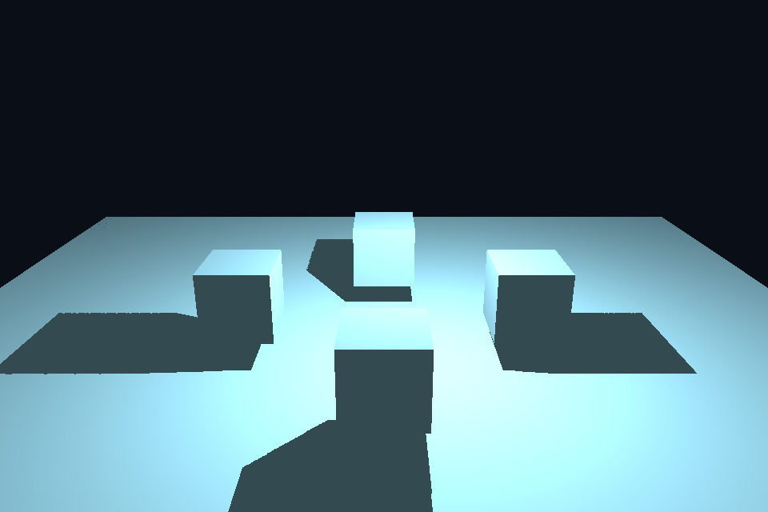

第 33 课：点光源全方向阴影
本课独立工程与关键注释
main.cpp · 本地辅助实现 · 本课着色器 · CMakeLists.txt
本目录拥有完整课程源码、资源与依赖配方。关键步骤含中文注释，不链接其他课的课程实现。可将整个目录复制到其他位置，用以下命令单独构建和检查；第三方依赖首次配置需要联网或提供缓存。
cmake -S . -B build -A x64
cmake --build build --config Debug --parallel 4
ctest --test-dir build -C Debug --output-on-failure
课程首页 · 上一课 · 下一课
目标与运行
cmake --preset opengl
cmake --build --preset opengl-debug --target 33_point_shadows --parallel 4
.\OpenGL\build\bin\Debug\33_point_shadows.exe
预期画面：移动点光源照亮四个立方体，地面阴影向各方向延伸；空格关闭阴影。
相机：W/A/S/D 移动，Q/E 升降，按住右键转向，Esc 退出。
代码阅读顺序
point_depth.vert/frag → 六个 cubemap 面 → point_shadow.frag
从本课 main.cpp 进入；公共工具在 common，GLSL 在 shaders。先画出每一遍读什么、写什么，再逐个展开辅助类。
原理与实现
第 13 课只有一个有限正交视锥，不能覆盖点光源全方向。本课从光源位置向六个轴向各渲染一次 90° 透视深度，形成 depth cubemap。使用六次 draw pass，未采用几何 shader 分层输出，方便逐面检查。
片段深度写成 length(worldPos-light)/farPlane，因此 cubemap 存的是线性径向距离，而不是默认透视 z。正常着色时用 worldPos-light 的方向采样，乘 farPlane 恢复距离，再与当前点距离比较。若写的是透视 z，却按径向距离读取，结果不会正确。
每面使用正确的 up 向量，并切换 GL_DEPTH_ATTACHMENT。颜色输出关闭；每个方向都清深度。恢复默认 FBO 和窗口 viewport 后再画正常场景。点光源运动时六面都需要更新，成本明显高于一张方向光阴影。
本课用 512² 深度、最近采样和固定 bias=.05，故边缘有锯齿，偏置也可能产生 acne/peter panning。扩展时可在球面方向上多次采样进行 PCF、使用角度与距离相关偏置。更大的分辨率并非唯一质量因素。
修改练习
依次显示六面深度；增大分辨率；实现多个方向的 PCF；调整光源高度。
修改后重新执行 cmake --build --preset opengl-debug --target 33_point_shadows --parallel 4。GLSL、模型、图片会复制到程序旁的 shaders/assets 目录。源文件应修改教程根目录下的版本，运行目录的副本会被下一次构建覆盖。
自测与参考答案
为什么点阴影用方向采样而不需为每个片段手选 cubemap 面？
Cubemap 采样器根据方向的最大绝对分量自动选面并计算面内坐标。
检查与排错
运行 33_point_shadows.exe --smoke 可执行确定时间的四帧渲染检查。重要技术开关还可用 --smoke --variant --capture 与默认抓图对比。共享工具会检查 GL 错误、非背景像素和图像动态范围，但这不能代替人工核对技术含义。参见 进阶排错。
参考截图
以下为课程自带素材、固定时间 1 秒时的实际渲染；你的相机与操作改变后画面会不同。

查看按住空格时的对照图
深入学习：数据、接口与执行
点光六个方向分别写深度 cubemap，保存 light 到表面的距离并用相同 farPlane 归一化。采样端和输出端的距离定义必须一致。
配套精讲：三 API 对照 · 阴影、SSAO 与后处理。先读概念与参数选择，再返回本课实现核对，不必一次展开所有公共类。
本课的真实源码切片
来自 OpenGL/lessons/33_point_shadows/main.cpp，第 7—32 行；这是现有实现的局部摘录，末尾可能处于函数中间，不是可单独编译的完整程序。
int main(int argc, char** argv) try {
// 先创建上下文；它必须比 shader、纹理和网格活得更久。
App app(argc, argv, "33_point_shadows - OpenGL Course");
GLuint fbo, depthCube;
glGenFramebuffers(1, &fbo);
glGenTextures(1, &depthCube);
bindCube(depthCube, 0);
for (int f = 0; f < 6; ++f)
glTexImage2D(GL_TEXTURE_CUBE_MAP_POSITIVE_X + f,
0,
GL_DEPTH_COMPONENT24,
512,
512,
0,
GL_DEPTH_COMPONENT,
GL_FLOAT,
nullptr);
glTexParameteri(GL_TEXTURE_CUBE_MAP, GL_TEXTURE_MIN_FILTER, GL_NEAREST);
glTexParameteri(GL_TEXTURE_CUBE_MAP, GL_TEXTURE_MAG_FILTER, GL_NEAREST);
for (GLenum axis : {GL_TEXTURE_WRAP_S, GL_TEXTURE_WRAP_T, GL_TEXTURE_WRAP_R})
glTexParameteri(GL_TEXTURE_CUBE_MAP, axis, GL_CLAMP_TO_EDGE);
glBindFramebuffer(GL_FRAMEBUFFER, fbo);
// 绘制使用当前程序、VAO 和附件；属性布局必须匹配顶点着色器。
glDrawBuffer(GL_NONE);
glReadBuffer(GL_NONE);
glFramebufferTexture2D(
同主题跨 API 导航
以下是同主题参考；场景、功能完成度和版本基线可能不同，具体边界见对照章节。
先预测，再验证
只改一端的 farPlane 会怎样？
参考推导：保存值与比较值不再处于同一尺度，阴影边界整体错误。先统一距离定义再调 bias/PCF。
在一次实验中只改一个因素，记录预测、实际画面/日志和原因。检查已有 smoke 是否仍通过；图形调试器里再核对本次 draw 的实际输入/输出，不能仅凭进程正常退出下结论。